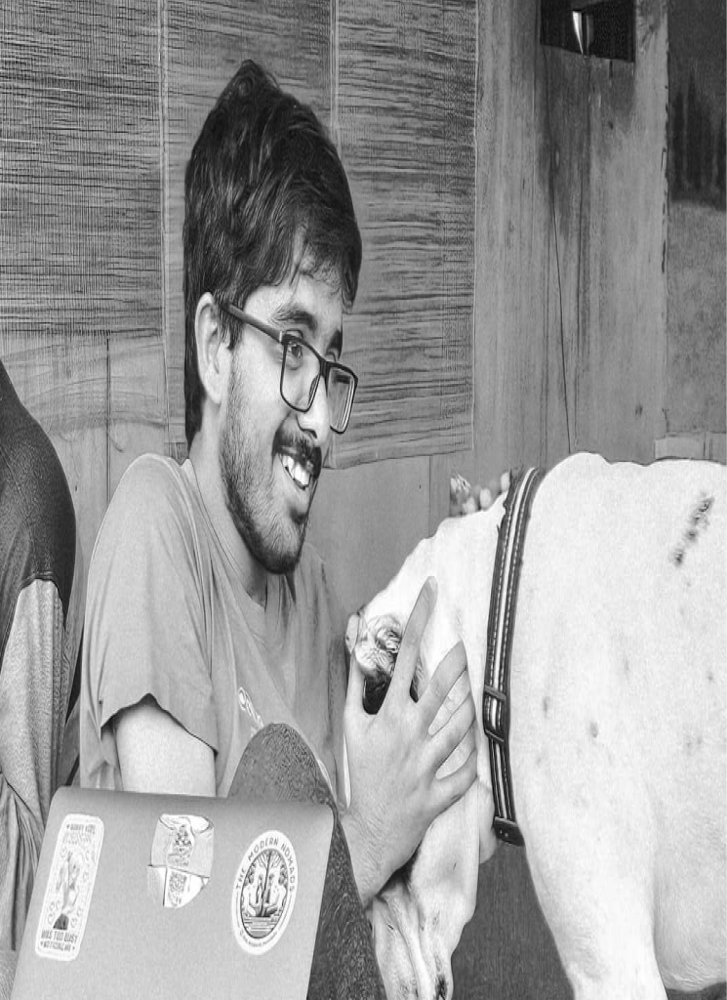
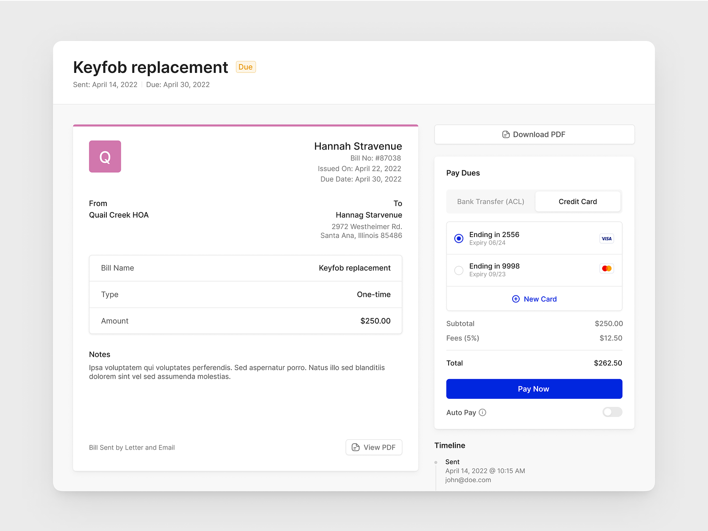
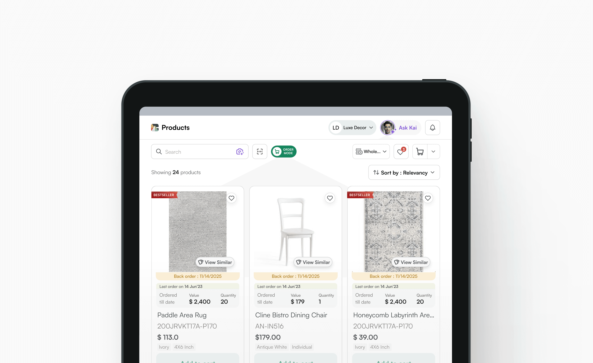
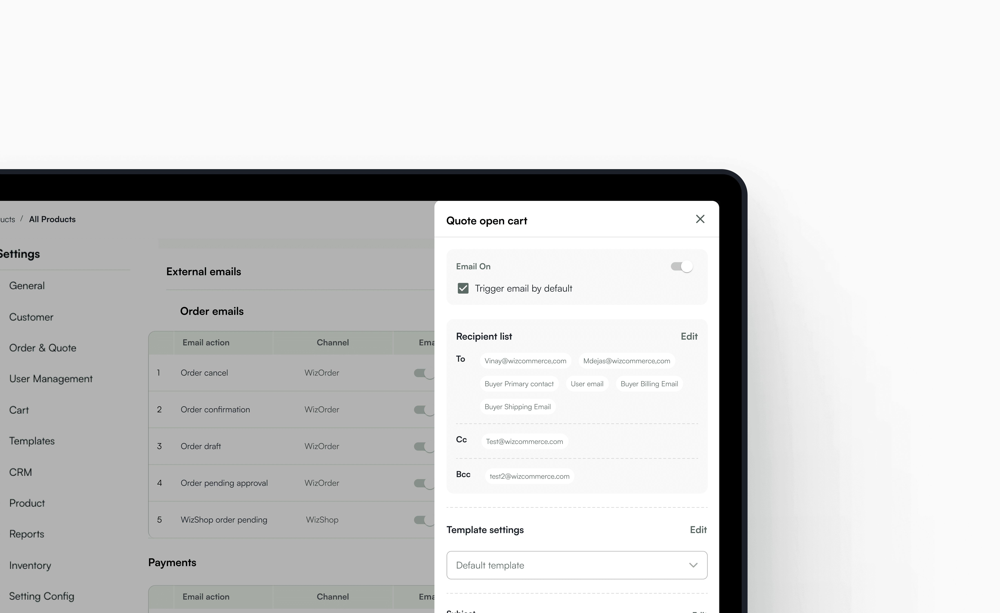
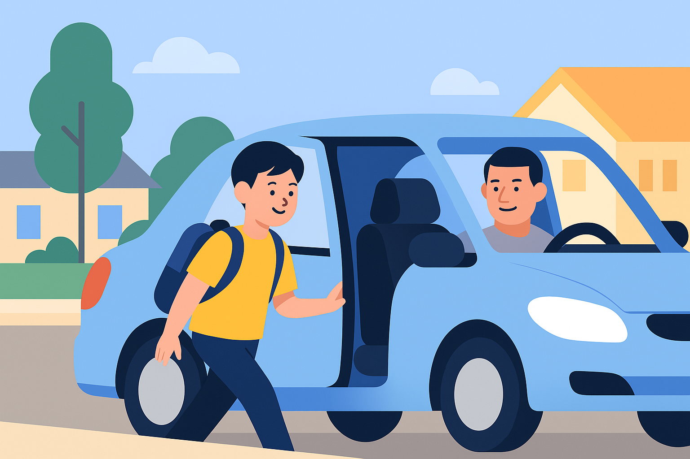
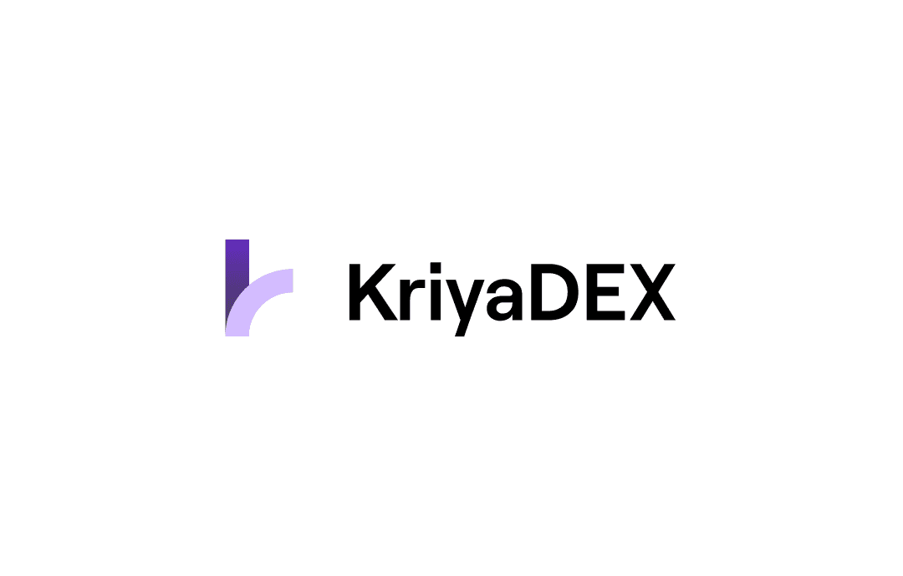
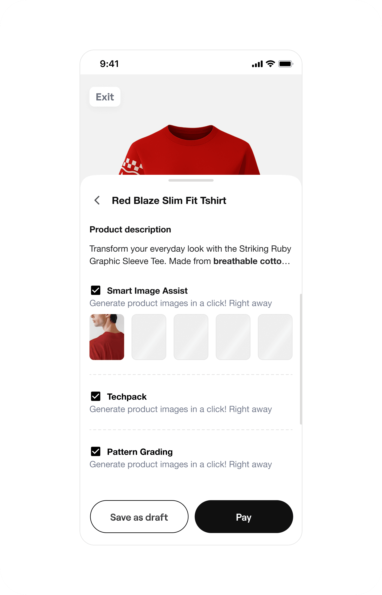
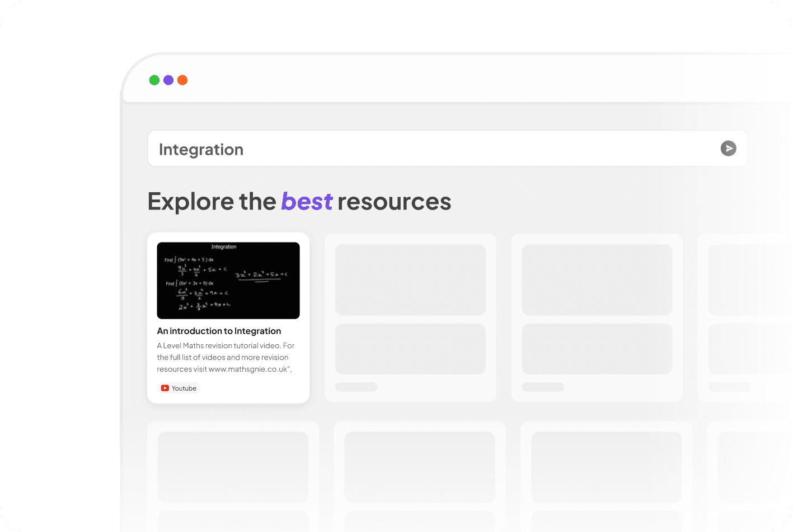
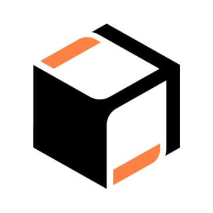

“I will keep designing for fun even in this economy”
says Parth Jha, an AI optimist, who believes intentmaxxxing is the solution

A technical product designer wanting to make sense to himself goes all out on platforms like i ask, i explore, i tinker— designing to make technology feel more human.
currently at [@airtribe]
A technical product designer wanting to make sense to himself goes all out on platforms like i ask, i explore, i tinker— designing to make technology feel more human.
currently at [@airtribe]
WizCommerce product touchpoints

An overview of products and systems designed while scaling WizCommerce to +$1.3M ARR.
Helping sales reps make better decisions with data

Simplifying B2B product cards and recommendations to surface decision-critical data for sales reps.
Anything and everything about automating emails

Improving the existing methods and building a scalable org-wide system for handeling emails.
Designing a safer Uber Kids onboarding

A child-facing onboarding flow around parent approvals, trusted places, safety codes, and fast help.
KriyaDex

Freelance
Logo design
Branding
Farevv.

Anti-portfolio
Curo.

MVP in progress
EXPERIENCE
“I will keep designing for fun even in this economy”
Superr
A technical product designer wanting to make sense to himself goes all out on platforms like i ask, i explore

EXPERIMENTS